Sol: kırpılmış görsel · Sağ: metin olarak çıkarılan hâl
| 1 YD16910 T1·1 s.1 |
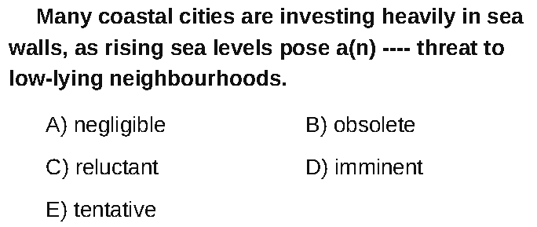 |
İngilizce · Kelime ve Dil Bilgisi Many coastal cities are investing heavily in sea walls, as rising sea levels pose a(n) ---- threat to low-lying neighbourhoods.
Cevap: D |
| 2 YD23492 T1·2 s.1 |
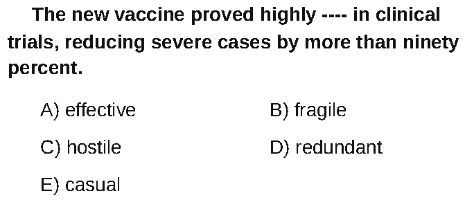 |
İngilizce · Kelime ve Dil Bilgisi The new vaccine proved highly ---- in clinical trials, reducing severe cases by more than ninety percent.
Cevap: A |
| 3 YD36914 T1·3 s.1 |
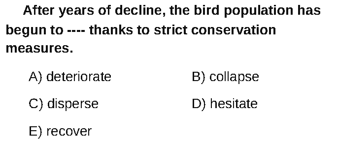 |
İngilizce · Kelime ve Dil Bilgisi After years of decline, the bird population has begun to ---- thanks to strict conservation measures.
Cevap: E |
| 4 YD42849 T1·4 s.1 |
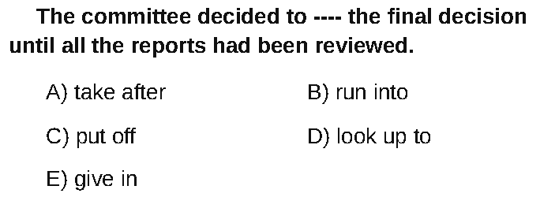 |
İngilizce · Kelime ve Dil Bilgisi The committee decided to ---- the final decision until all the reports had been reviewed.
Cevap: C |
| 5 YD70583 T1·5 s.1 |
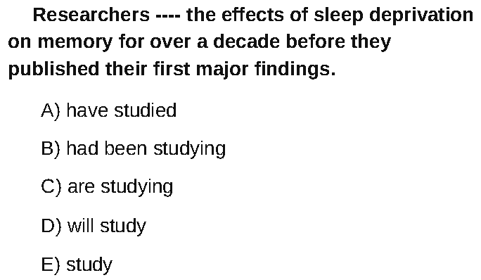 |
İngilizce · Kelime ve Dil Bilgisi Researchers ---- the effects of sleep deprivation on memory for over a decade before they published their first major findings.
Cevap: B |
| 6 YD77453 T1·6 s.1 |
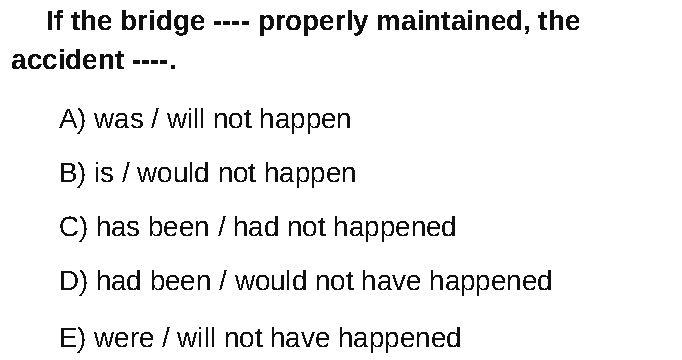 |
İngilizce · Kelime ve Dil Bilgisi If the bridge ---- properly maintained, the accident ----.
Cevap: D |
| 7 YD14107 T1·7 s.1 |
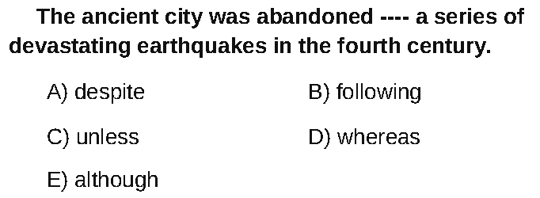 |
İngilizce · Kelime ve Dil Bilgisi The ancient city was abandoned ---- a series of devastating earthquakes in the fourth century.
Cevap: B |
| 8 YD74122 T1·8 s.1 |
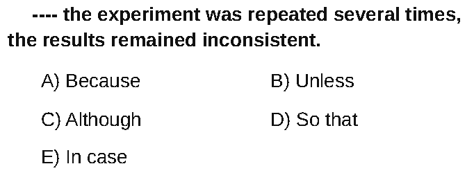 |
İngilizce · Kelime ve Dil Bilgisi ---- the experiment was repeated several times, the results remained inconsistent.
Cevap: C |
| 9 YD93852 T1·9 s.1 |
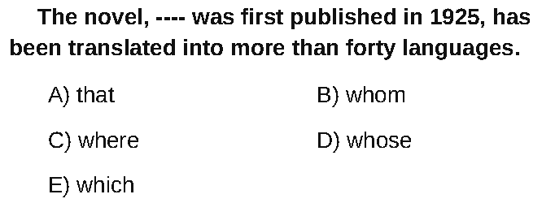 |
İngilizce · Kelime ve Dil Bilgisi The novel, ---- was first published in 1925, has been translated into more than forty languages.
Cevap: E |
| 10 YD52633 T1·10 s.1 |
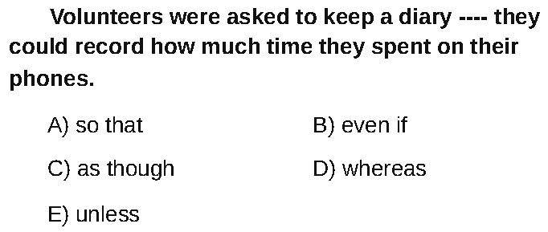 |
İngilizce · Kelime ve Dil Bilgisi Volunteers were asked to keep a diary ---- they could record how much time they spent on their phones.
Cevap: A |
| 11 YD14687 T1·11 s.2 |
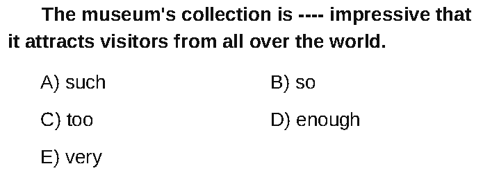 |
İngilizce · Kelime ve Dil Bilgisi The museum's collection is ---- impressive that it attracts visitors from all over the world.
Cevap: B |
| 12 YD28501 T1·12 s.2 |
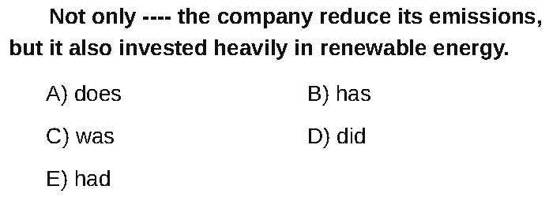 |
İngilizce · Kelime ve Dil Bilgisi Not only ---- the company reduce its emissions, but it also invested heavily in renewable energy.
Cevap: D |
| 13 YD62563 T1·13 s.2 |
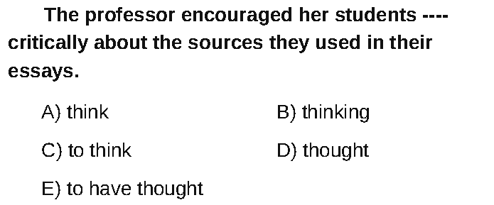 |
İngilizce · Kelime ve Dil Bilgisi The professor encouraged her students ---- critically about the sources they used in their essays.
Cevap: C |
| 14 YD62544 T1·14 s.2 |
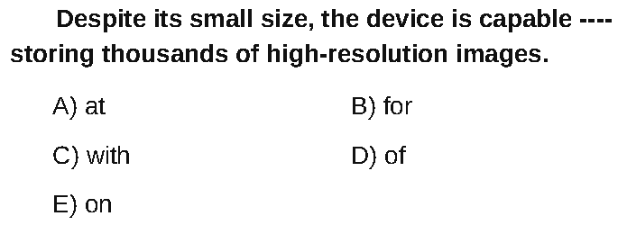 |
İngilizce · Kelime ve Dil Bilgisi Despite its small size, the device is capable ---- storing thousands of high-resolution images.
Cevap: D |
| 15 YD11430 T1·15 s.2 |
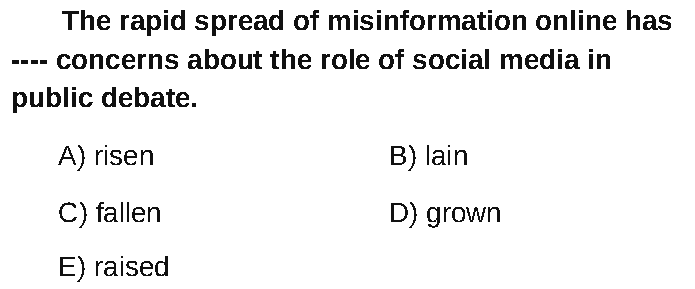 |
İngilizce · Kelime ve Dil Bilgisi The rapid spread of misinformation online has ---- concerns about the role of social media in public debate.
Cevap: E |
| 16 YD49388 T1·16 s.2 |
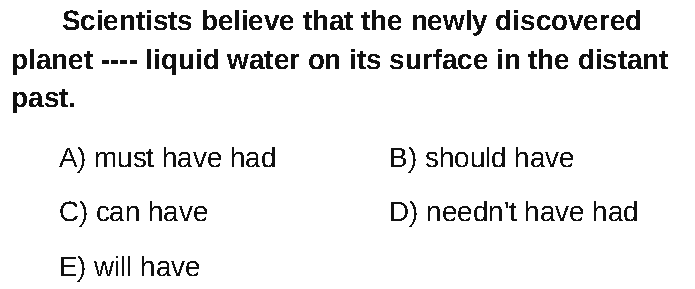 |
İngilizce · Kelime ve Dil Bilgisi Scientists believe that the newly discovered planet ---- liquid water on its surface in the distant past.
Cevap: A |
| 17 YD45674 T1·17 s.2 |
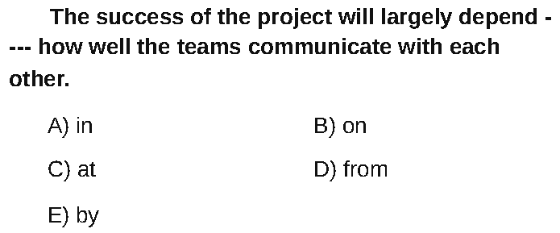 |
İngilizce · Kelime ve Dil Bilgisi The success of the project will largely depend ---- how well the teams communicate with each other.
Cevap: B |
| 18 YD18923 T1·18 s.2 |
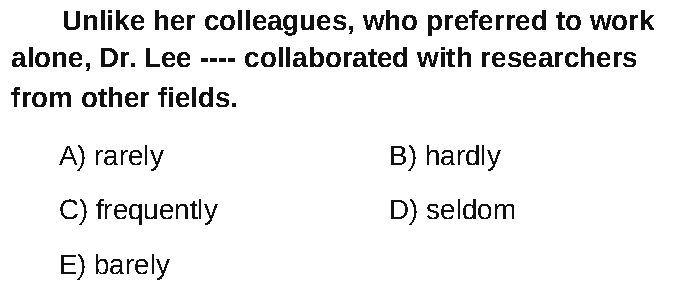 |
İngilizce · Kelime ve Dil Bilgisi Unlike her colleagues, who preferred to work alone, Dr. Lee ---- collaborated with researchers from other fields.
Cevap: C |
| 19 YD34381 T1·19 s.2 |
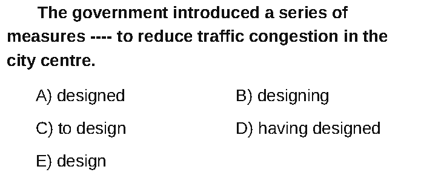 |
İngilizce · Kelime ve Dil Bilgisi The government introduced a series of measures ---- to reduce traffic congestion in the city centre.
Cevap: A |
| 20 YD48890 T1·20 s.2 |
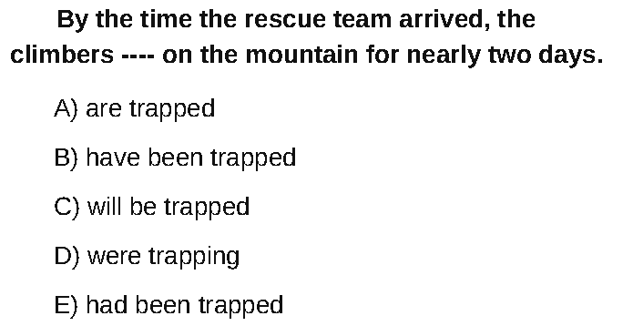 |
İngilizce · Kelime ve Dil Bilgisi By the time the rescue team arrived, the climbers ---- on the mountain for nearly two days.
Cevap: E |